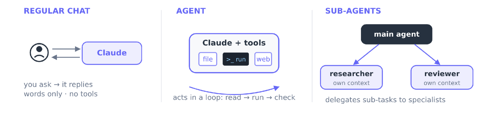

במקום סוכן אחד שעושה הכול, צוות קטן: חוקר שרק קורא, ובונה שרק כותב. בסוף השעה יש לכם צוות של שניים שעובד על חומר אמיתי שלכם.
בקשה שחוזרת, בפקודה אחת.
שלבים שמדברים דרך קבצים, ועצירה שבה אתם מחליטים.
Claude מגיע ליומן, לקבצים ולרשת.
שימו לב: בכל אלה יש סוכן אחד ושיחה אחת. הכול נערם באותו שולחן עבודה. היום הוא מקבל עוזרים.
עונה במילים. לא פותח קבצים ולא מריץ כלום.
יש לו כלים וזיכרון, והוא עובד בלולאה: קורא, פועל, בודק. Claude Code הוא סוכן.
כמה סוכנים, כל אחד בחלון שיחה משלו. הסוכן הראשי מעביר להם משימות קטנות.

במעבדה אף אחד לא עושה הכול. יש מי שמכין דגימות, מי שמודד, ומי שכותב את הדוח. כל אחד מכיר רק את החלק שלו.
אתם ממשיכים לכתוב. העוזר הולך לספרייה, קורא עשרה מאמרים וחוזר עם עמוד אחד. את הספרייה עצמה אתם לא רואים.
בתזה או בפרויקט גמר יש הרבה חומר לקרוא. אם כל מה שנקרא נערם בשיחה אחת, היא מתנפחת. עוזר שקורא בשבילכם משאיר לכם שולחן נקי.
קורא 20 מאמרים. כל הטקסט נכנס לשיחה. אחרי זה קשה לו לשים לב לפרטים, והתשובות מתחילות להיות כלליות.
החוקר קורא את 20 המאמרים בחלון משלו וחוזר עם סיכום קצר. בשיחה שלכם נכנס רק הסיכום.
שולחן עבודה. כל הספרים פתוחים עליו, ואין מקום לכתוב. עוזר שקורא בחדר אחר, ומביא פתק.
העבודה הרועשת קורית שם, ואליכם חוזר סיכום קצר.
נותנים לו רק מה שצריך. חוקר שרק קורא לא יכול למחוק לכם קובץ.
קובץ קטן שכותבים פעם אחת, ואפשר להשתמש בו בכל פרויקט.
לעבודה פשוטה אפשר לבחור מודל מהיר וזול, כמו Haiku.
מחפש וקורא מהר. לקריאה בלבד: אין לו כלי כתיבה.
אוסף מידע לפני שמציגים לכם תוכנית. גם הוא לקריאה בלבד.
למשימות של כמה שלבים. יש לו את כל הכלים, אז הוא גם קורא וגם משנה.
כשביקשתם מ-Claude להסתכל בתיקייה לפני שהתחיל לעבוד, סביר שהוא שלח את Explore. נסו לקרוא לו בשם:
הכול קורה בחלון אחד.
רץ באותו חלון, ומוסיף לו.
מקבל משימה, עובד לבד, ומחזיר תשובה.
Skill כשאתם רוצים לחזור על אותה עבודה. סוכן-משנה כשהעבודה רועשת, או כשצריך להגביל כלים.
agents-lab/⚡ יש חומר משלכם? שימו אותו ב-notes/ במקום שלושת הקבצים.
/agents. הסוכן reviewer מופיע ברשימה⚡ מעדיפים תפריט? מקלידים /agents, בוחרים Create new agent ואז Project, ומתארים במשפט מה הסוכן עושה.
זה הכול. סוכן הוא קובץ טקסט: כותרת קצרה, ואחריה ההוראות שלו.
| מה רואים | למה זה קורה | מה עושים |
|---|---|---|
| הסוכן לא ברשימה של /agents | התיקייה .claude/agents/ לא הייתה קיימת כשפתחתם את Claude | סוגרים ופותחים מחדש, פעם אחת |
| Claude עושה הכול בעצמו | התיאור עמום | מחדדים את התיאור, או משתמשים ב-@ |
| מבקשים ממכם אישור | הסוכן רוצה לכתוב או להריץ משהו | זה תקין. קוראים ומאשרים |
| התשובה ארוכה מדי | ההוראות לא אומרות מה להחזיר | מוסיפים: ״החזר עד 10 שורות״ |
⚡ אפשר לשאול את Claude: ״למה לא שלחת את זה לסוכן reviewer, ומה לשנות בתיאור שלו?״
.claude/agents/. נשאר בתיקייה, וניתן לשיתוף.
~/.claude/agents/. בכל הפרויקטים שלכם.
⚡ אין חובה. מתחילים עם name, description ו-tools, ומוסיפים רק כשצריך.
/agents ובוחרים Create new agent ואז Project.claude/agents/.claude/agents/, ו-Claude שלח אליו את העבודה בהרצה אחת.״עוזר עם מאמרים״
הסוכן הראשי לא יודע מתי להשתמש בו, ופשוט עושה לבד.
״קורא מאמר אחד ומחזיר שאלה, שיטה ותוצאה. להשתמש כשמבקשים ממני לסכם מאמר.״
הסוכן הראשי מזהה את המצב, ושולח.
מודעת דרושים. ״מישהו שעוזר״ לא מביא אף אחד. ״חוקר שמסכם מאמר בעמוד אחד״ מביא בדיוק את מי שצריך.
⚡ אם Claude לא מאציל: אל תתקנו אותו, תחדדו את התיאור.
החוקר קורא את X ומחזיר Y. הבונה קורא את Y ויוצר את Z.
Read, Glob, GrepRead, WriteBashהחוקר קורא את סיכומי ההרצאות של קורס עיבוד אותות ומחזיר רשימה של עשרת הנושאים החשובים. הבונה מקבל את הרשימה ויוצר דף סיכום למבחן.
⚡ שימו לב: לחוקר אין Write. זה מה שהופך אותו לבטוח.
המטרה: שני סוכנים שרצים בזה אחר זה על משימה אחת, על חומר אמיתי שלכם.
בחרו חומר: סיכומי הרצאות לדף למבחן, מאמרים לסקירה קצרה, או טיוטה לביקורת. הקלט כבר בתיקייה agents-lab/.
agents-lab/. החומר ב-notes/, או שמחליפים בחומר משלכםRead, Glob, Grep בלבד. בדיוק כמו ה-reviewer מקודםRead, Write. הוא יוצר את summary.htmlחומר אחר? מחליפים את notes/ ואת שמות הסוכנים (למשל papers/, ו-paper-scout ו-slide-writer).
.claude/agents/, בקשה אחת הריצה את החוקר ואחריו את הבונה, ופתחתם את summary.html בדפדפן.⚡ נתקעתם? שאלו את Claude: ״למה הסוכן הראשי לא שלח את העבודה לסוכן-המשנה, ומה לשנות בתיאור?״
סוכן-משנה הוא עוזר בחלון משלו. חלון נקי, כלים מוגבלים, ותיאור חד שגורם לסוכן הראשי להאציל.
שני סוכנים: חוקר שרק קורא, ובונה שיוצר את הפלט. בקשה אחת הריצה את שניהם.
הצוות רץ רק כשאתם מבקשים. איך גורמים לו להתחיל לבד, ואיך שומרים עליו שלא ישנה קבצים בטעות? זה מודול 8: אוטומציות והוקים.